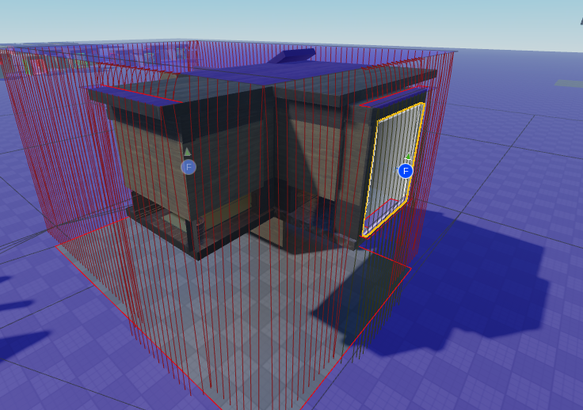

Room Gen Setup Guide
How to configure rooms, doors, prefabs, rules, and RoomBase hitboxes.
1. Plugin and RoomBase Hitbox
Download the Dev Panel plugin here: Dev Panel on the Roblox Creator Store.
When you open the plugin, you will see an ImGui-style interface. To set up the hitbox:
- Open the Bounding Box tab.
- Click on your room model.
- Set the hitbox name to
RoomBase. - You can use multiple hitboxes if needed; just scale them properly to fit the room.
- Set the size offset to
-2. - Click Generate so the hitbox appears.
2. Naming and Attributes
- Standard rooms: Name the model
Floor_RoomName. - Start rooms: Name the model
Floor_StartRoom.
Every room must have its attributes configured. Use the plugin to copy attributes from a template room onto your finished room before inspection and testing.
3. RoomDoor (Entrances, Exits, and Chunks)
Entrance, exit, and subroom spawns are replaced with RoomDoor.
Entrance, Exit, and Reversible Rooms
- Each
RoomDoorhasWeight_ExitandWeight_Entranceattributes. - Set one of those values to
9999to make that door act as the corresponding Exit or Entrance. - For reversible rooms, use that same
Weight_ExitandWeight_Entrancesetup.
Door Facing Direction
- Exits: Face the
RoomDooroutward. - Entrances: Face the
RoomDoorinward toward the room.
Chunk Rooms and Door Segments
- For chunk rooms, use one
RoomDoorfor the entrance and use the remaining doors for subrooms. - Name the exit
Halfand have half of it facing outward (see the reference image below). - Set
Chunk_Amountto an even number to avoid incomplete chunks.

4. Prefabs
- Place prefab part inside a folder named
Assetsinside the room. - Name the prefab
Prefab. - Add an attribute specifying which object should spawn there.
5. Start Rooms, Subrooms, and Dark Rooms
Random Start Room
Include multiple start rooms and configure your style rules like this:
return {
styleRules = {
{min = math.random(10, 15), max = math.random(20, 30), style = "TEST"},
}
}Subroom
Subroom spawning is already handled in the room generator.
Dark Room
- Room effects (such as breaking lights) are handled in
game/ServerScriptService/CoreModules/RoomGen/Modules/RoomEffects. - Whether a floor allows specific room effects is controlled in
game/ServerScriptService/CoreModules/RoomGen/Values/"FloorName"/Setup.